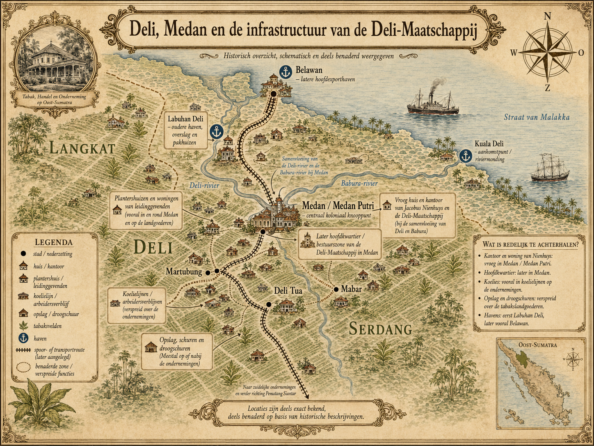
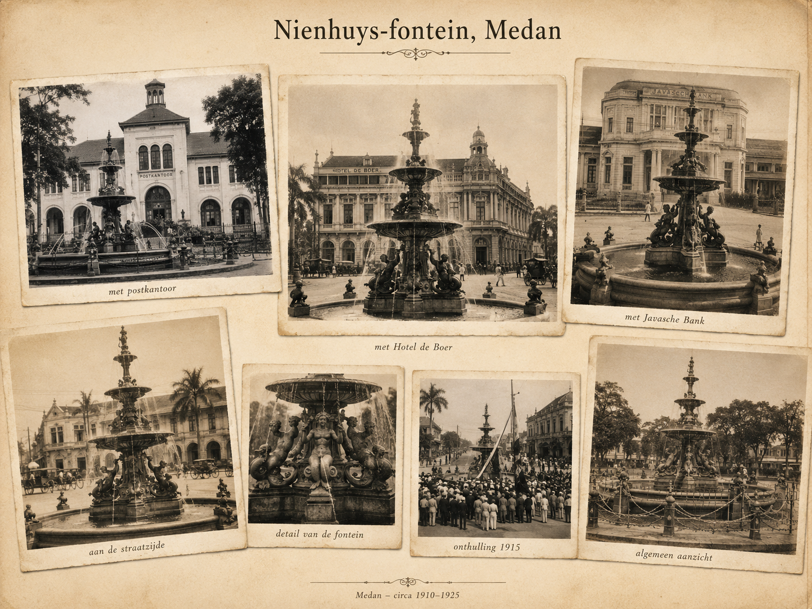

P.W. Janssen
Financier en ondernemer
Privéproject voor de familie Noë / Nienhuys
De familie Nienhuys, Deli en Herengracht 380–382
Een privé-familiekroniek over Jacobus Nienhuys, Deli, Medan, Amsterdam en de schaduwzijde van koloniale ondernemingsgeschiedenis.

Verleden, verwantschap en herinnering
Dit project is geen poging om Jacobus Nienhuys eenvoudigweg te eren of te veroordelen. Het is een familiegeschiedenis met meerdere lagen: ondernemerschap, koloniale expansie, rijkdom, arbeid, geweld, herinnering en verwantschap. Sommige bronnen spreken in bewondering over de pionier van Deli. Andere stemmen wijzen juist op de prijs die arbeiders en lokale gemeenschappen betaalden. Juist die spanning maakt het verhaal belangrijk.
01
De persoon en het portret
Jacobus Nienhuys werd in de negentiende eeuw bekend als pionier van de Deli-tabak. In Nederlandse koloniale kranten werd hij vaak voorgesteld als een sobere, vasthoudende ondernemer die onder moeilijke omstandigheden een nieuwe cultuur tot ontwikkeling bracht. Die voorstelling is historisch belangrijk, maar niet neutraal: zij laat vooral zien hoe Nederland en de Europese gemeenschap in Deli hem wilden herinneren.
02
Een bestaand landschap
Deli was geen leeg gebied. Vóór de komst van Europese plantageondernemers bestond er al een Maleis sultanaat, met Labuhan Deli als belangrijk centrum. De komst van Nienhuys moet daarom niet worden gelezen als het begin van Deli, maar als het begin van een nieuwe koloniale plantagefase.
1863 · Oostkust van Sumatra
Volgens latere herinneringsbronnen kwam Nienhuys in 1863 naar Deli na verhalen over de mogelijkheden van tabaksteelt. De eerste verwachtingen bleken overdreven. De regio was geen kant-en-klare tabaksmarkt; de onderneming begon met onzekerheid, verlies en improvisatie. Juist daarin ontstond later de pioniersmythe: de eenling die bleef waar anderen vertrokken.
De eerste jaren van Deli waren niet alleen een verhaal van succes, maar ook van misleiding, verlies, conflict en volharding.
03
Kapitaal, organisatie en groei
De eerste jaren waren onzeker. De beloofde tabaksrijkdom bleek niet direct aanwezig, de eerste ondernemingen leden verlies en financiers trokken zich terug. Toch bleef Nienhuys proberen. Via nieuwe geldschieters, onder wie P.W. Janssen en G.C. Clemen, groeide het initiatief uit tot de Deli Maatschappij, opgericht in 1869. Later werd Jacob Theodoor Cremer een sleutelfiguur in de verdere ontwikkeling.
Financier en ondernemer
Vroege zakenpartner
Latere organisator en bestuurder
Onderneming achter de groei van de tabakscultuur
Historische oriëntatie
Plaatsen, routes en plantages
Deze kaart is een schematische reconstructie van de tabakswereld rond Deli en Medan. Zij toont de belangrijkste plaatsen, havens, transportroutes, plantagegebieden, woningen, kantoren, koelielijnen en opslag- of droogschuren zoals die op basis van historische beschrijvingen redelijk te plaatsen zijn.

De historische kaart kon niet worden geladen.
04
Wat de heldenverhalen minder vaak vertellen
De Deli-tabak was niet alleen een verhaal van ondernemerschap. De plantages draaiden op contractarbeid, onder meer van Chinese, Javaanse en andere arbeiders. Oude kranten en herdenkingsstukken spreken vaak bewonderend over pionierskracht, maar zeggen veel minder over afhankelijkheid, tucht, geweld en de positie van de arbeiders. Juist deze stilte moet zichtbaar blijven.
Het stokslagenverhaal is geen processtuk, maar een herinneringsanekdote. Juist daardoor toont het hoe de koloniale gemeenschap haar eigen geweld kon verzachten: niet als strafrechtelijk probleem, maar als kordate pionierspraktijk.
Bronkritische kanttekening
In latere bronnen en hedendaagse reacties circuleren claims over ernstige mishandeling, dodelijk geweld en een mogelijk gedwongen vertrek van Nienhuys uit Deli. Zulke claims zijn belangrijk voor het morele en historische beeld, maar moeten zorgvuldig worden onderscheiden van formeel bewezen feiten. Waar een processtuk of primaire bron ontbreekt, wordt op deze site gesproken van een claim, herinnering of overlevering.
05
Een verdeelde herinnering
In Medan werd Nienhuys later herdacht als stichtingsfiguur van de plantagewereld. Zijn naam werd verbonden aan een fontein, publieke herdenkingen en verhalen over de groei van Medan. Hedendaagse Indonesische reacties laten zien dat die herinnering verdeeld is: voor sommigen is hij een pionier, voor anderen een symbool van koloniale uitbuiting.
Perspectief 01
Sommige reacties noemen Nienhuys onmisbaar voor de ontwikkeling van Medan.
Perspectief 02
Andere reacties benadrukken geweld, arbeid en Nederlandse verantwoordelijkheid.
Perspectief 03
Een kijker vraagt expliciet naar wetenschappelijk onderzoek als referentie.
Historische herinneringslaag
Monument in het stadsbeeld
De Nienhuys-fontein werd in Medan opgericht als herinneringsmonument aan Jacobus Nienhuys en de vroege tabakscultuur van Deli. De beelden tonen hoe de fontein onderdeel werd van het koloniale stadsbeeld, onder meer bij het postkantoor, Hotel de Boer en de Javasche Bank.

De historische collage kon niet worden geladen.
Broncontext: Koloniale Monumenten, “J. Nienhuys, Medan, 1915”; De Sumatra Post, 17 november 1915; De Tijd, 28 mei 1958. Beeldrechten en collectiegegevens nader te controleren.
06
Van koloniale rijkdom naar herinneringsplaats
Terug in Nederland liet Nienhuys aan de Herengracht 380–382 een opvallend stadspaleis bouwen. Het gebouw, ontworpen door Abraham Salm, werd later bekend door zijn rijke, bijna on-Amsterdamse uitstraling. Tegenwoordig is het pand verbonden met het NIOD. Daarmee kreeg het huis een tweede geschiedenis: van koloniale rijkdom naar archiefplaats van oorlog, vervolging en herinnering.
De brand en het bevroren bluswater als krachtig beeld.
Architect van het stadspaleis.
Latere bestemming als instituut voor oorlog, Holocaust en genocide.
Het huis als materiële erfenis van Deli.
07
Het persoonlijke spoor
Voor deze familiechroniek is ook de latere familielijn belangrijk. De verbinding met de familie Noë maakt het verhaal persoonlijk. Dit deel van de site blijft bewust terughoudend: publieke geschiedenis en privé-familiegeschiedenis worden naast elkaar geplaatst, maar niet volledig vermengd.
Ruimte voor beeld uit het familiearchief
Ruimte voor een controleerbare familiebron
Ruimte voor een persoonlijk verhaal
Ruimte voor later toe te voegen materiaal
08
Kranten, instellingen en familiekennis
De bronnen hieronder laten niet alleen zien wat er gebeurde, maar ook hoe Nienhuys en Deli door de tijd heen zijn voorgesteld.
Krantenbron · 1913
Nienhuys wordt genoemd als “eerste planter” in Deli. Waardevol als venster op koloniale zelfrepresentatie.
Krantenbron · 1926
Huldigend interview rond zijn negentigste verjaardag. Belangrijk als heldenportret, niet als neutrale bron.
Krantenbron · 1938
Jubileumnummer bij 75 jaar Deli. Toont verering van Nienhuys, maar bevat ook verwijzingen naar conflict en morele crisis.
Krantenbron · 1938
Bevat het stokslagenverhaal. Bruikbaar als voorbeeld van hoe eigenrichting later werd verteld en verzacht.
Instituut
Belangrijke bron voor Herengracht 380–382, de koloniale context en de latere betekenis van het gebouw.
Digitaal archief
Digitale krantenbron voor publieke beeldvorming rond Nienhuys, Deli, Medan en de Deli Maatschappij.
Privécollectie
De verbinding Nienhuys–Noë is bevestigd vanuit directe familiekennis en kan later met akten worden aangevuld.